4. خدمة الويب J2EE لإدارة المواعيد
لنعد إلى بنية التطبيق المراد إنشاؤه:
 |
في هذا القسم، سنركز على بناء خدمة الويب J2EE [1] التي تعمل على خادم Sun/Glassfish.
4.1. قاعدة البيانات
قاعدة البيانات، التي سنسميها [ dbrdvmedecins]، هي قاعدة بيانات MySQL5 تحتوي على أربعة جداول:

4.1.1. جدول [MEDECINS]
يحتوي على معلومات حول الأطباء الذين يديرهم تطبيق [RdvMedecins].
 |  |
- ID: رقم تعريف الطبيب — المفتاح الأساسي للجدول
- VERSION: رقم يحدد إصدار الصف في الجدول. يزداد هذا الرقم بمقدار 1 في كل مرة يتم فيها إجراء تغيير على الصف.
- LAST_NAME: لقب الطبيب
- FIRST_NAME: الاسم الأول للطبيب
- TITLE: لقبهم (السيدة، السيدة، السيد)
4.1.2. جدول [CLIENTS]
يتم تخزين عملاء الأطباء المختلفين في جدول [CLIENTS]:
 |  |
- ID: رقم التعريف الذي يحدد العميل - المفتاح الأساسي للجدول
- VERSION: الرقم الذي يحدد إصدار الصف في الجدول. يزداد هذا الرقم بمقدار 1 في كل مرة يتم فيها إجراء تغيير على الصف.
- LAST NAME: اسم عائلة العميل
- FIRST NAME: الاسم الأول للعميل
- TITLE: لقبهم (السيدة، السيدة، السيد)
4.1.3. جدول [SLOTS]
يسرد المواعيد المتاحة:
 |
 |
- ID: رقم تعريف الفترة الزمنية - المفتاح الأساسي للجدول (الصف 8)
- VERSION: رقم يحدد إصدار الصف في الجدول. يزداد هذا الرقم بمقدار 1 في كل مرة يتم فيها إجراء تغيير على الصف.
- DOC_ID: رقم التعريف الذي يحدد الطبيب الذي تنتمي إليه هذه الفترة الزمنية – مفتاح خارجي في عمود DOCTORS(ID).
- START_TIME: وقت بدء الفترة الزمنية
- MSTART: دقائق بداية الفترة الزمنية
- HFIN: وقت انتهاء الفترة الزمنية
- MFIN: دقائق نهاية الفترة الزمنية
يشير الصف الثاني من جدول [SLOTS] (انظر [1] أعلاه) على سبيل المثال إلى أن الفترة رقم 2 تبدأ في الساعة 8:20 صباحًا وتنتهي في الساعة 8:40 صباحًا وتخص الطبيبة رقم 1 (السيدة ماري بيليسييه).
4.1.4. جدول [RV]
يُدرج المواعيد المحجوزة لكل طبيب:
 |
- ID: معرف فريد للموعد – المفتاح الأساسي
- DAY: يوم الموعد
- SLOT_ID: فترة الموعد – مفتاح خارجي في حقل [ID] في جدول [SLOTS] – يحدد كل من فترة الموعد والطبيب المعني.
- CLIENT_ID: معرف العميل الذي تم الحجز لصالحه – مفتاح خارجي في حقل [ID] في جدول [CLIENTS]
يحتوي هذا الجدول على قيد تفرد على قيم الأعمدة المرتبطة (DAY، SLOT_ID):
إذا كان أحد الصفوف في الجدول [RV] يحتوي على القيمة (DAY1، SLOT_ID1) للأعمدة (DAY، SLOT_ID)، فلا يمكن أن تظهر هذه القيمة في أي مكان آخر. وإلا، فهذا يعني أنه تم حجز موعدين في نفس الوقت لنفس الطبيب. من منظور برمجة Java، يقوم برنامج تشغيل JDBC الخاص بقاعدة البيانات بإصدار استثناء SQLException عند حدوث ذلك.
الصف الذي يحمل الرقم التعريفي 3 (انظر [1] أعلاه) يعني أنه تم حجز موعد للفترة رقم 20 والعميل رقم 4 في 23/08/2006. يوضح لنا جدول [SLOTS] أن الفترة رقم 20 تتوافق مع الفترة الزمنية 4:20 مساءً – 4:40 مساءً وتخص الطبيبة رقم 1 (السيدة ماري بيليسييه). يخبرنا الجدول [CLIENTS] أن العميل رقم 4 هو السيدة بريجيت بيسترو.
4.2. إنشاء قاعدة البيانات
قم بإنشاء قاعدة بيانات MySQL [dbrdvmedecins] باستخدام الأداة التي تختارها. لإنشاء الجداول وتعبئتها، يمكنك استخدام البرنامج النصي [createbd.sql] المرفق. ومحتوياته كالتالي:
4.3. مكونات بنية جانب الخادم
لنعد إلى بنية التطبيق المراد بناؤه:
 |
على جانب الخادم، سيتألف التطبيق من:
- طبقة JPA تسمح بالتفاعل مع قاعدة البيانات باستخدام الكائنات
- وحدة EJB مسؤولة عن إدارة العمليات مع طبقة JPA
- خدمة ويب مسؤولة عن عرض واجهة EJB للعملاء البعيدين في شكل خدمة ويب.
العنصران (ب) و(ج) ينفذان طبقة [DAO] الموضحة في الرسم البياني السابق. نعلم أن التطبيق يمكنه الوصول إلى EJB بعيد عبر بروتوكولي RMI وJNDI. في الواقع، هذا يقصر العملاء على عملاء Java. خدمة الويب تستخدم بروتوكول اتصال موحد تنفذه لغات مختلفة: .NET، PHP، C++، ... وهذا ما نريد توضيحه هنا باستخدام عميل .NET.
للحصول على مقدمة موجزة عن خدمات الويب، انظر الدورة التدريبية [ref1]، الفقرة 14، الصفحة 109.
يمكن تنفيذ خدمة الويب بطريقتين:
- عن طريق فئة مزودة بعلامة @WebService تعمل في حاوية ويب
 |
- بواسطة EJB مزود بعلامة @WebService ويتم تشغيله في حاوية EJB
 |
 |
سنستخدم الحل الأول هنا:
في المقرر [ref1]، الفقرة 14، الصفحة 109، ستجد مثالاً يستخدم الحل الثاني.
4.4. ، وتكوين Hibernate لخادم GlassFish
اعتمادًا على الإصدار، قد لا يحتوي خادم GlassFish V2 المضمن في NetBeans على مكتبات Hibernate المطلوبة من قبل طبقة JPA/Hibernate. إذا وجدت، أثناء متابعة البرنامج التعليمي، أن GlassFish لا يوفر تطبيق JPA/Hibernate، أو إذا حدثت استثناء أثناء نشر الخدمة يشير إلى عدم العثور على مكتبات Hibernate، فيجب عليك إضافة المكتبات إلى المجلد [<glassfish>/domains/domain1/lib/ext] ثم إعادة تشغيل خادم GlassFish:
 |
|
مكتبات Hibernate مضمنة في ملف ZIP المرفق بالبرنامج التعليمي.
4.5. أدوات الإنشاء التلقائي في NetBeans
لنعد إلى البنية التي نحتاج إلى بنائها:
 |
باستخدام NetBeans، يمكن إنشاء طبقة [JPA] وطبقة [EJB] التي تتحكم في الوصول إلى كيانات JPA التي تم إنشاؤها تلقائيًا. من المفيد أن تكون على دراية بأساليب الإنشاء التلقائي هذه لأن الكود الذي تم إنشاؤه يوفر رؤى قيّمة حول كيفية كتابة كيانات JPA أو كود EJB الذي يستخدمها.
سنقوم الآن بوصف بعض أدوات الإنشاء التلقائي هذه. لفهم الكود الذي تم إنشاؤه، تحتاج إلى فهم قوي لكيانات JPA [ref1] و EJBs [ref2].
إنشاء اتصال NetBeans بقاعدة البيانات
- قم بتشغيل نظام إدارة قواعد البيانات MySQL 5 حتى تصبح قاعدة البيانات متاحة
- قم بإنشاء اتصال NetBeans بقاعدة البيانات [dbrdvmedecins]
 |
- في علامة التبويب [Files]، ضمن قسم [Databases] [1]، حدد برنامج تشغيل MySQL JDBC [2]
- ثم حدد الخيار [3] "Connect Using" لإنشاء اتصال بقاعدة بيانات MySQL
- في [4]، أدخل المعلومات المطلوبة
- ثم قم بالتأكيد في [5]
 |
- في [6]، يتم إنشاء الاتصال. يمكنك رؤية الجداول الأربعة في قاعدة البيانات المتصلة.
 |
- في [1]، قم بإنشاء تطبيق جديد، ووحدة EJB
- في [2]، حدد فئة [Java EE]، وفي [3]، حدد النوع [وحدة EJB]
 |
- في [4]، اختر مجلدًا للمشروع وفي [5]، قم بتسميته — ثم أكمل المعالج
- في [6]، المشروع الذي تم إنشاؤه
إضافة مورد JDBC إلى خادم GlassFish
سنقوم بإضافة مورد JDBC إلى خادم GlassFish.
 |
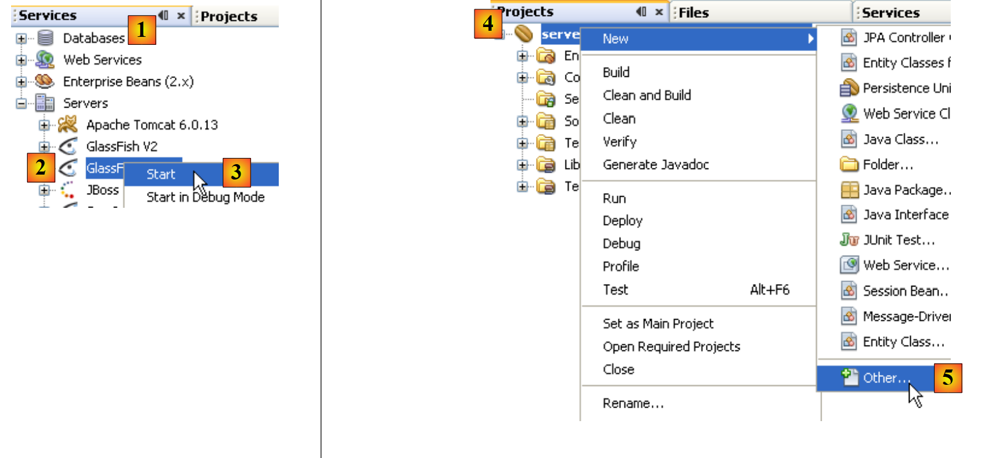 |
- في علامة التبويب [الخدمات]، قم بتشغيل خادم GlassFish [2، 3]
- في علامة التبويب [Projects]، انقر بزر الماوس الأيمن على مشروع EJB وفي [5] حدد الخيار [New / Other] لإضافة عنصر إلى المشروع.

- في [6]، حدد فئة [Glassfish]، وفي [7]، حدد أنك تريد إنشاء مورد JDBC عن طريق تحديد النوع [JDBC Resource]
- في [8]، حدد أن مورد JDBC هذا سيستخدم مجموعة الاتصال الخاصة به
- في [9]، قم بتسمية مورد JDBC
- في [10]، انتقل إلى الخطوة التالية
 |
- في [11]، حدد خصائص تجمع اتصالات مورد JDBC
- في [12]، قم بتسمية مجموعة الاتصالات
- في [13]، حدد اتصال NetBeans [dbrdvmedecins] الذي تم إنشاؤه مسبقًا
- في [14]، انتقل إلى الخطوة التالية
- في [15]، لا يوجد عادةً ما يمكن تغييره في هذه الصفحة. تم أخذ خصائص الاتصال بقاعدة بيانات MySQL [dbrdvmedecins] من خصائص اتصال NetBeans [dbrdvmedecins] الذي تم إنشاؤه مسبقًا
- في [16]، انتقل إلى الخطوة التالية
 |
- في [17]، احتفظ بالقيم الافتراضية المحددة
- في [18]، ثم أكمل المعالج. يؤدي ذلك إلى إنشاء ملف [sun-resources.xml] [19] بالمحتوى التالي:
يحتوي الملف أعلاه على جميع المعلومات التي تم إدخالها في المعالج بتنسيق XML. وسيستخدمه NetBeans IDE لإرشاد خادم GlassFish لإنشاء المورد "jdbc/dbrdvmedecins" المحدد في السطر 4.
تقوم وحدة الاستمرارية [persistence.xml] بتكوين طبقة JPA: فهي تحدد تطبيق JPA المستخدم (TopLink، Hibernate، إلخ) وتقوم بتكوينه.
 |
 |
- في [1]، انقر بزر الماوس الأيمن على مشروع EJB واختر [New / Other] في [2]
- في [3]، حدد فئة [Persistence]، ثم في [4]، حدد أنك تريد إنشاء وحدة استمرارية JPA
 |
- في [5]، قم بتسمية وحدة الاستمرارية التي تم إنشاؤها
- في [6]، اختر [Hibernate] كتنفيذ JPA
- في [7]، حدد مورد GlassFish "jdbc/dbrdvmedecins" الذي تم إنشاؤه للتو
- في [8]، حدد أنه لا ينبغي تنفيذ أي إجراء على قاعدة البيانات عند إنشاء مثيل لطبقة JPA
- أكمل المعالج
- في [9]، ملف [persistence.xml] الذي أنشأه المعالج
محتواه كما يلي:
مرة أخرى، يقوم هذا الملف بتحويل المعلومات المقدمة في المعالج إلى تنسيق XML. هذا الملف غير كافٍ للعمل مع قاعدة بيانات MySQL5 "dbrdvmedecins". سنحتاج إلى تحديد نوع نظام إدارة قواعد البيانات (DBMS) الذي سيتم إدارته بواسطة Hibernate. سيتم القيام بذلك لاحقًا.
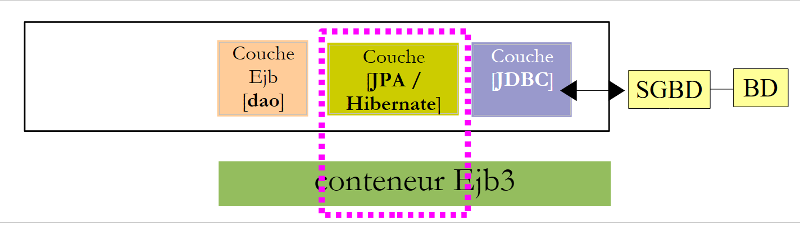 |
 |
 |
- في [1]، انقر بزر الماوس الأيمن على المشروع، ثم في [2] حدد الخيار [جديد / آخر]
- في [3]، حدد فئة [الاستمرارية]، ثم في [4]، حدد أنك تريد إنشاء كيانات JPA من قاعدة بيانات موجودة.
 |
- في [5]، حدد مصدر JDBC "jdbc/dbrdvmedecins" الذي أنشأناه
- في [6]، حدد الجداول الأربعة من قاعدة البيانات المرتبطة
- في [7،8]، قم بتضمينها جميعًا في إنشاء كيانات JPA
- في [9]، تابع مع المعالج
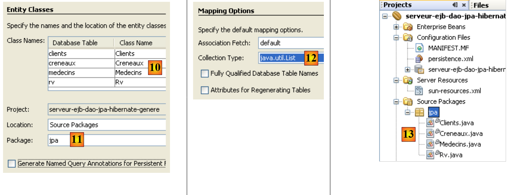 |
- في [10]، كيانات JPA التي سيتم إنشاؤها
- في [11]، قم بتسمية حزمة كيانات JPA
- في [12]، اختر نوع Java الذي سيغلف قوائم الكائنات التي تعيدها طبقة JPA
- أكمل المعالج
- في [13]، كيانات JPA الأربعة التي تم إنشاؤها، واحد لكل جدول قاعدة بيانات.
فيما يلي، على سبيل المثال، كود الكيان [Rv]، الذي يمثل صفًا في جدول [rv] لقاعدة البيانات [dbrdvmedecins].
إنشاء طبقة EJB للوصول إلى كيانات JPA
 |
 |
- في [1]، انقر بزر الماوس الأيمن على المشروع، وفي [2]، حدد الخيار [New / Other]
- في [3]، حدد فئة [الاستمرارية]، ثم في [4] حدد النوع [حبوب الجلسة لفئات الكيانات]
 |
- في [5]، يتم عرض كيانات JPA التي تم إنشاؤها مسبقًا
- في [6]، حددها جميعًا
- في [7]، تم تحديدها
- في [8]، تابع مع المعالج
 |
- في [9]، قم بتسمية الحزمة الخاصة بـ EJBs التي سيتم إنشاؤها
- في [10]، حدد أن EJBs يجب أن تنفذ واجهة محلية وواجهة بعيدة
- أكمل المعالج
- في [11]، EJBs التي تم إنشاؤها
فيما يلي، على سبيل المثال، كود EJB الذي يدير الوصول إلى الكيان [Rv]، وبالتالي إلى الجدول [rv] في قاعدة البيانات [dbrdvmedecins]:
كما ذكرنا، يمكن أن يكون إنشاء الكود تلقائيًا مفيدًا جدًا لبدء مشروع ما والتعرف على كيانات JPA و EJBs. في الأقسام التالية، سنعيد كتابة طبقات JPA و EJB باستخدام كودنا الخاص، لكن القارئ سيدرك المعلومات التي تناولناها للتو في إنشاء الطبقات تلقائيًا.
4.6. مشروع NetBeans لوحدة EJB
نقوم بإنشاء وحدة EJB فارغة جديدة (انظر القسم 4.5):
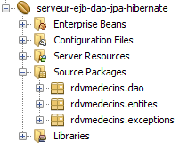 |
- تحتوي الحزمة [rdvmedecins.entites] على كيانات طبقة JPA
- تنفذ الحزمة [rdvmedecins.dao] EJB لطبقة [dao]
- تنفذ الحزمة [rdvmedecins.exceptions] فئة استثناء خاصة بالتطبيق
فيما يلي، نفترض أن القارئ قد اتبع جميع الخطوات الواردة في القسم 4.5. وسيحتاج إلى تكرار بعضها.
4.6.1. تكوين طبقة JPA
دعونا نستعرض بنية تطبيق العميل/الخادم الخاص بنا:
 |
مشروع NetBeans:
 |
يتم تكوين طبقة [JPA] بواسطة ملفَي [persistence.xml] و[sun-resources.xml] أعلاه. يتم إنشاء هذين الملفين بواسطة المعالجات التي سبق أن تعرفنا عليها:
- تم وصف إنشاء ملف [sun-resources.xml] في القسم 4.5.
- وقد تم وصف إنشاء ملف [persistence.xml] في القسم 4.5.
يجب تعديل ملف [persistence.xml] الذي تم إنشاؤه على النحو التالي:
- السطر 3: نوع المعاملة هو JTA: ستتم إدارة المعاملات بواسطة حاوية GlassFish EJB3
- السطر 4: يتم استخدام تطبيق JPA/Hibernate. ولهذا الغرض، تمت إضافة مكتبة Hibernate إلى خادم GlassFish (انظر القسم 4.4).
- السطر 5: مصدر بيانات JTA الذي تستخدمه طبقة JPA له اسم JNDI "jdbc/dbrdvmedecins".
- السطر 8: لا يتم إنشاء هذا السطر تلقائيًا. يجب إضافته يدويًا. وهو يُعلم Hibernate بأن نظام إدارة قواعد البيانات المستخدم هو MySQL5.
يتم تكوين مصدر البيانات "jdbc/dbrdvmedecins" في ملف [sun-resources.xml] التالي:
- الأسطر 8–10: خصائص JDBC لمصدر البيانات (عنوان URL لقاعدة البيانات واسم المستخدم وكلمة المرور). قاعدة بيانات MySQL `dbrdvmedecins` هي تلك الموصوفة في القسم 4.1.
- السطر 7: خصائص تجمع الاتصالات المرتبط بمصدر البيانات هذا
4.6.2. كيانات طبقة JPA
دعونا نستعرض بنية تطبيق العميل/الخادم الخاص بنا:
 |
مشروع NetBeans:
 |
تقوم حزمة [rdvmedecins.entites] بتنفيذ طبقة [Jpa].
في القسم 4.5، رأينا كيفية إنشاء كيانات JPA تلقائيًا لتطبيق ما. لن نستخدم هذه التقنية هنا، بل سنقوم بتعريف الكيانات بأنفسنا. ومع ذلك، ستتضمن هذه الكيانات الكثير من الكود الذي تم إنشاؤه في القسم 4.5. هنا، نريد أن تكون كيانات [Medecin] و[Client] فئات فرعية لفئة [Personne].
تُستخدم فئة Person لتمثيل الأطباء والعملاء:
- السطر 3: لاحظ أن فئة [Person] ليست كيانًا بحد ذاتها (@Entity). بل ستكون الفئة الأم للكيانات. وتشير العلامة @MappedSuperClass إلى هذه الحالة.
تغلف كيان [Client] صفوف جدول [clients]. وهي مشتقة من الفئة [Person] السابقة:
- السطر 3: فئة [Client] هي كيان JPA
- السطر 4: وهي مرتبطة بجدول [clients]
- السطر 5: وهي مشتقة من فئة [Person]
كيان [Doctor]، الذي يغلف صفوف جدول [doctors]، يتبع نفس النمط:
تغلف الكيان [Creneau] صفوف جدول [creneaux]:
- السطور 15–17 تمثل العلاقة "واحد إلى عدة" بين جدول [slots] وجدول [doctors] في قاعدة البيانات.
يغلف الكيان [Rv] صفوف جدول [rv]:
- الأسطر 15–17 تمثل العلاقة "واحد إلى عدة" بين جدول [rv] وجدول [clients] في قاعدة البيانات، والأسطر 18–20 تمثل العلاقة "واحد إلى عدة" بين جدول [rv] وجدول [slots]
4.6.3. فئة الاستثناء
 |
فئة الاستثناءات الخاصة بالتطبيق [ RdvMedecinsException] هي كما يلي:
- السطر 6: تمتد الفئة من فئة [RuntimeException]. ولذلك، لا يشترط المُجمِّع معالجتها باستخدام كتل try/catch.
- السطر 5: تضمن علامة @ApplicationException أن الاستثناء لن يتم "ابتلاعه" بواسطة [EjbException].
لفهم تعليق @ApplicationException، دعونا نراجع بنية جانب الخادم:
 |
سيتم إلقاء الاستثناء [RdvMedecinsException] بواسطة طرق EJB في طبقة [dao] داخل حاوية EJB3 وسيتم اعتراضه بواسطة الحاوية. بدون تعليق @ApplicationException، تقوم حاوية EJB3 بتغليف الاستثناء الذي حدث داخل [EjbException] وإعادة إلقائه. قد لا ترغب في هذا التغليف وتفضل السماح باستثناء من النوع [RdvMedecinsException] بالخروج من حاوية EJB3. وهذا ما تسمح به علامة @ApplicationException. علاوة على ذلك، فإن السمة (rollback=true) لهذا التعليق التوضيحي توجه حاوية Ejb3 بأنه في حالة حدوث استثناء من النوع [RdvMedecinsException] داخل طريقة يتم تنفيذها كجزء من معاملة مع نظام إدارة قواعد البيانات (DBMS)، يجب التراجع عن المعاملة. من الناحية الفنية، يُسمى هذا التراجع عن المعاملة.
4.6.4. EJB لطبقة [dao]
 |
 |
واجهة Java [ IDao] لطبقة [dao] هي كما يلي:
الواجهة المحلية لـ EJB [IDaoLocal] هي ببساطة امتداد للواجهة السابقة [IDao]:
وينطبق الأمر نفسه على الواجهة البعيدة [IDaoRemote]:
تقوم EJB [DaoJpa] بتنفيذ كل من الواجهة المحلية والواجهة البعيدة:
- يشير السطر 3 إلى أن EJB البعيد يسمى "rdvmedecins.dao"
- يشير السطر 4 إلى أن جميع أساليب EJB يتم تنفيذها ضمن معاملة يديرها حاوية EJB3.
- يُظهر السطر 5 أن EJB يُنفذ الواجهات المحلية والبعيدة.
فيما يلي كود EJB الكامل:
1 2 3 4 5 6 7 8 9 10 11 12 13 14 15 16 17 18 19 20 21 22 23 24 25 26 27 28 29 30 31 32 33 34 35 36 37 38 39 40 41 42 43 44 45 46 47 48 49 50 51 52 53 54 55 56 57 58 59 60 61 62 63 64 65 66 67 68 69 70 71 72 73 74 75 76 77 78 79 80 81 82 83 84 85 86 87 88 89 90 91 92 93 94 95 96 97 98 99 100 101 102 103 104 105 106 107 108 | |
- السطر 8: كائن EntityManager الذي يدير الوصول إلى سياق الاستمرارية. عند إنشاء مثيل للفئة، سيتم تهيئة هذا الحقل بواسطة حاوية EJB باستخدام تعليق @PersistenceContext في السطر 7.
- السطر 15: استعلام JPQL الذي يُرجع جميع الصفوف من جدول [clients] كقائمة من كائنات [Client].
- السطر 22: استعلام مشابه للأطباء
- السطر 32: استعلام JPQL يقوم بدمج بين الجدولين [slots] و[doctors]. يتم تحديد معلماته بواسطة معرف الطبيب.
- السطر 43: استعلام JPQL يقوم بدمج الجداول [appointments] و[slots] و[doctors] ويحتوي على معلمتين: معرف الطبيب وتاريخ الموعد.
- الأسطر 55-57: إنشاء موعد وتخزينه لاحقًا في قاعدة البيانات.
- السطر 67: حذف موعد من قاعدة البيانات.
- السطر 76: تنفيذ استعلام SELECT على قاعدة البيانات للعثور على عميل معين
- السطر 85: نفس الشيء بالنسبة للطبيب
- السطر 94: نفس الشيء بالنسبة لموعد
- السطر 103: نفس الشيء بالنسبة لفترة زمنية
- من المرجح أن تواجه جميع العمليات التي تتضمن سياق الاستمرارية من السطر 9 مشكلة في قاعدة البيانات. لذلك، يتم تضمينها جميعًا في كتلة try/catch. يتم تغليف أي استثناء في الاستثناء المخصص RdvMedecinsException.
بمجرد الانتهاء من التجميع، تقوم وحدة EJB بإنشاء ملف .jar باسم " ":
 |
4.7. نشر وحدة EJB الخاصة بطبقة [DAO] باستخدام NetBeans
يتيح لك NetBeans نشر وحدة EJB التي تم إنشاؤها مسبقًا بسهولة على خادم GlassFish.
 |
- في خصائص مشروع EJB، حدد خيارات وقت التشغيل [1].
- في [2]، اسم الخادم الذي سيتم نشر EJB عليه
- في علامة التبويب [الخدمات] [3]، قم بتشغيله [4].
 |
- في [5]، خادم GlassFish بعد تشغيله. لا يحتوي بعد على وحدة EJB.
- قم بتشغيل خادم MySQL وتأكد من أن قاعدة البيانات [dbrdvmedecins] متصلة بالإنترنت. للقيام بذلك، يمكنك استخدام اتصال NetBeans الذي تم إنشاؤه في القسم 4.5.
- في علامة التبويب [Projects] [6]، قم بنشر وحدة EJB [7]: يجب أن يكون نظام إدارة قواعد البيانات MySQL5 قيد التشغيل حتى يمكن الوصول إلى مورد JDBC "jdbc/dbrdvmedecins" الذي تستخدمه وحدة EJB.
- في [8]، تظهر وحدة EJB التي تم نشرها في شجرة خادم GlassFish
 |
- في [9]، قم بإزالة وحدة EJB التي تم نشرها
- في [10]، لم يعد EJB يظهر في شجرة خادم GlassFish.
4.8. نشر EJB من طبقة [DAO] باستخدام GlassFish
نوضح هنا كيفية نشر EJB على خادم GlassFish من أرشيف .jar الخاص به.
- ابدأ تشغيل خادم MySQL وتأكد من أن قاعدة البيانات [dbrdvmedecins] متصلة بالإنترنت. للقيام بذلك، يمكنك استخدام اتصال NetBeans الذي تم إنشاؤه في القسم 4.5.
دعونا نراجع تكوين JPA لوحدة EJB المراد نشرها. يتم تعريف هذا التكوين في ملف [persistence.xml]:
يشير السطر 5 إلى أن طبقة JPA تستخدم مصدر بيانات JTA، أي مصدر بيانات يديره حاوية EJB3، باسم "jdbc/dbrdvmedecins".
لقد رأينا في القسم 4.5 كيفية إنشاء مورد JDBC هذا باستخدام NetBeans. هنا، نعرض كيفية القيام بذلك مباشرةً باستخدام GlassFish. نتبع الإجراء الموصوف في القسم 13.1.2، الصفحة 79 من [ref1].
نبدأ بحذف المورد حتى نتمكن من إعادة إنشائه. نقوم بذلك من NetBeans:
 |
- في [1]، موارد JDBC لخادم GlassFish
- في [2]، مورد "jdbc/dbrdvmedecins" الخاص بـ EJB الخاص بنا
- في [3]، تجمع الاتصالات لهذا المورد JDBC
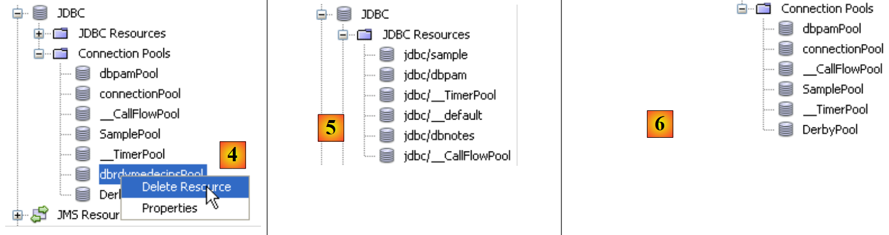 |
- في [4]، نقوم بحذف تجمع الاتصالات. سيؤدي ذلك إلى حذف جميع موارد JDBC التي تستخدمه، بما في ذلك مورد "jdbc/dbrdvmedecins".
- في [5] و[6]، تم إتلاف مورد JDBC ومجمع الاتصالات.
الآن، نستخدم وحدة التحكم في إدارة خادم GlassFish لإنشاء مورد JDBC ونشر EJB.
 |
- في علامة التبويب [Services] [1] في NetBeans، قم بتشغيل خادم GlassFish [2] ثم قم بالوصول [3] إلى وحدة التحكم الخاصة به
- في [4]، قم بتسجيل الدخول كمسؤول (كلمة المرور: adminadmin إذا لم تكن قد قمت بتغييرها أثناء التثبيت أو بعده).
 |
- في [5]، حدد فرع [Connection Pools] من موارد GlassFish
- في [6]، قم بإنشاء تجمع اتصال جديد. لاحظ أن تجمع الاتصال هو تقنية لتقييد عدد الاتصالات المفتوحة والمغلقة مع نظام إدارة قواعد البيانات (DBMS). عند بدء تشغيل الخادم، يتم فتح N اتصال — وهو رقم محدد بواسطة التكوين — بنظام إدارة قواعد البيانات (DBMS). ثم يتم إتاحة هذه الاتصالات المفتوحة لـ EJBs التي تطلبها لإجراء عملية مع نظام إدارة قواعد البيانات (DBMS). بمجرد اكتمال العملية، تعيد EJB الاتصال إلى التجمع. لا يتم إغلاق الاتصال أبدًا؛ بل يتم مشاركته بين الخيوط المختلفة التي تصل إلى نظام إدارة قواعد البيانات
- في [7]، قم بتسمية المجمع
- في [8]، الفئة التي تمثل مصدر البيانات هي فئة [javax.sql.DataSource]
- في [9]، نظام إدارة قواعد البيانات الذي يحتوي على مصدر البيانات هو MySQL هنا.
- في [10]، انتقل إلى الخطوة التالية
 |
- في [11]، تضمن السمة "Connection Validation Required" (التحقق من صحة الاتصال مطلوب) أنه قبل منح اتصال، يتحقق المجمع من أنه يعمل. إذا لم يكن كذلك، فإنه ينشئ اتصالاً جديداً. وهذا يسمح للتطبيق بمواصلة العمل بعد انقطاع مؤقت في نظام إدارة قواعد البيانات. أثناء الانقطاع، لا يمكن استخدام أي اتصالات، ويتم إرسال استثناءات إلى العميل. عند انتهاء الانقطاع، يحصل العملاء الذين يواصلون طلب الاتصالات عليها مرة أخرى: بفضل السمة "التحقق من صحة الاتصال مطلوب"، سيتم إعادة إنشاء جميع الاتصالات في المجموعة. بدون هذه السمة، ستكتشف المجموعة أن الاتصالات الأولية قد فُقدت ولكنها لن تحاول إعادة إنشاء اتصالات جديدة.
- في [12]، تم تحديد مستوى العزل "Read Committed" للمعاملات. يضمن هذا المستوى أن المعاملة T2 لا يمكنها قراءة البيانات التي تم تعديلها بواسطة المعاملة T1 حتى تكتمل الأخيرة بالكامل.
- في [13]، نحدد أن جميع المعاملات يجب أن تستخدم مستوى العزل المحدد في [12]
 |
- في [14] و[15]، حدد عنوان URL لقاعدة البيانات التي تدار اتصالاتها بواسطة المجمع
- في [16]، سيكون المستخدم هو root
- في [17]، أضف خاصية
- في [18]، أضف خاصية "Password" بالقيمة () في [19]. على الرغم من أن لقطة الشاشة [19] لا تظهر ذلك، لا تدخل سلسلة فارغة؛ بدلاً من ذلك، أدخل () (قوس مفتوح، قوس مغلق) للإشارة إلى كلمة مرور فارغة. إذا كان للمستخدم الجذر لنظام إدارة قواعد البيانات MySQL كلمة مرور غير فارغة، أدخل تلك الكلمة.
- في [20]، أكمل معالج إنشاء تجمع الاتصالات لقاعدة بيانات MySQL [dbrdvmedecins].
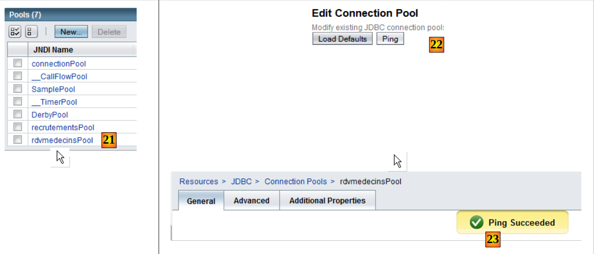 |
- في [21]، تم إنشاء المجموعة. انقر فوق الرابط الخاص بها.
- في [22]، يتيح لك زر [Ping] إنشاء اتصال بقاعدة البيانات [dbrdvmedecins]
- في [23]، إذا سارت الأمور على ما يرام، ستظهر رسالة تشير إلى نجاح الاتصال
بمجرد إنشاء تجمع الاتصال، يمكنك إنشاء مورد JDBC:
 |
- في [1]، حدد فرع [JDBC Resources] من شجرة كائنات الخادم
- في [2]، قم بإنشاء مورد JDBC جديد
- في [3]، قم بتسمية مورد JDBC. يجب أن يتطابق هذا الاسم مع الاسم المستخدم في ملف [persistence.xml]:
- في [4]، حدد مجموعة الاتصالات التي يجب أن يستخدمها مورد JDBC الجديد: تلك التي أنشأتها للتو
- في [5]، ننهي معالج الإنشاء
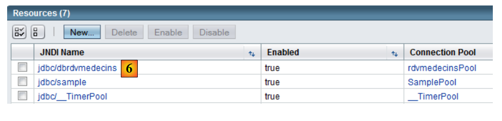 |
- في [6]، مورد JDBC الجديد
الآن بعد إنشاء مورد JDBC، يمكنك نشر ملف JAR الخاص بـ EJB:
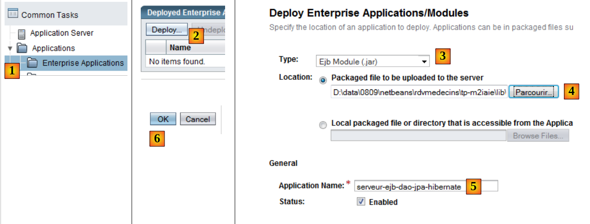 |
- في [1]، حدد فرع [Enterprise Applications]
- في [2]، انقر فوق الزر [Deploy] للإشارة إلى رغبتك في نشر تطبيق جديد
- في [3]، حدد أن التطبيق هو وحدة EJB
- في [4]، حدد ملف EJB JAR [serveur-ejb-dao-jpa-hibernate.jar] الذي تم توفيره لك من أجل هذا التمرين.
- في [5]، يمكنك تغيير اسم وحدة EJB إذا كنت ترغب في ذلك
- في [6]، أكمل معالج نشر وحدة EJB
 |
- في [7]، تم نشر وحدة EJB. يمكن الآن استخدامها.
4.9. اختبار EJB لطبقة [DAO]
الآن بعد أن تم نشر EJB لطبقة [DAO] في تطبيقنا، يمكننا اختباره. سنقوم بذلك باستخدام عميل Java التالي:
 |
فئة [MainTestsDaoRemote] [1] هي فئة اختبار JUnit 4. تتكون المكتبات الموجودة في [2] من:
- ملف JAR الخاص بـ EJB في طبقة [DAO] [3] (انظر القسم 4.6.4).
- مكتبات GlassFish [4] المطلوبة لعملاء EJB عن بُعد.
فئة الاختبار هي كما يلي:
- السطر 13: لاحظ إنشاء مثيل الوكيل EJB البعيد. نستخدم اسمه JNDI "rdvmedecins.dao".
- تستخدم طرق الاختبار الطرق التي يعرضها EJB (انظر القسم 4.6.4).
إذا سارت الأمور على ما يرام، يجب أن تنجح الاختبارات:
 |
الآن بعد أن أصبح EJB الخاص بطبقة [dao] جاهزًا للعمل، يمكننا المضي قدمًا في عرضه للجمهور عبر خدمة ويب.
4.10. خدمة الويب الخاصة بطبقة [dao]
للحصول على مقدمة موجزة لمفهوم خدمة الويب، انظر القسم 14، الصفحة 111 من [ref1].
لنعد إلى بنية الخادم لتطبيق العميل/الخادم الخاص بنا:
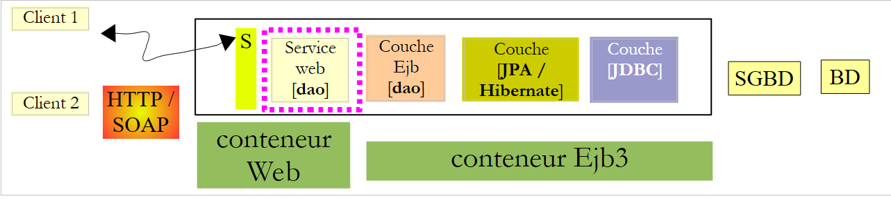 |
نركز هنا على خدمة الويب الخاصة بطبقة [DAO]. والغرض الوحيد من هذه الخدمة هو إتاحة واجهة EJB الخاصة بطبقة [DAO] للعملاء عبر الأنظمة الأساسية المختلفة القادرين على التواصل مع خدمة الويب.
تذكر أن هناك طريقتين لتنفيذ خدمة الويب:
- استخدام فئة مزودة بعلامة @WebService تعمل في حاوية ويب
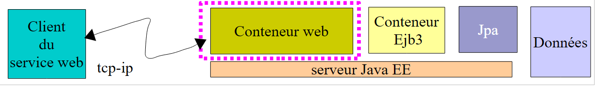 |
- باستخدام EJB مزود بعلامة @WebService يعمل في حاوية EJB
 |
هنا، نستخدم الحل الأول. في بيئة تطوير NetBeans، نحتاج إلى إنشاء مشروع مؤسسي يتكون من وحدتين:
- وحدة EJB التي ستعمل في حاوية EJB: EJB لطبقة [DAO].
- وحدة الويب التي ستعمل في حاوية الويب: خدمة الويب التي نقوم ببنائها حاليًا.
سنقوم ببناء هذا المشروع المؤسسي بطريقتين.
4.10.1. مشروع NetBeans - الإصدار 1
أولاً، نقوم بإنشاء مشروع NetBeans من نوع "تطبيق ويب":
 |
- في [1]، أنشئ مشروعًا جديدًا في فئة "Java Web" [2] من نوع "Web Application" [3].
 |
- في [4]، نسمي المشروع، وفي [5] نحدد المجلد الذي سيتم إنشاؤه فيه
- في [6]، نحدد خادم التطبيق الذي سيقوم بتشغيل تطبيق الويب
- في [7]، قم بتعيين سياق التطبيق
- في [8]، قم بالتحقق من صحة تكوين المشروع.
 |
- في [9]، المشروع الذي تم إنشاؤه. ستستخدم خدمة الويب التي نقوم بإنشائها EJB من المشروع السابق [10]. لذلك، يجب أن تشير إلى ملف .jar الخاص بوحدة EJB [10].
- في [11]، أضف مشروع NetBeans إلى مكتبات مشروع الويب [12]
 |
- في [13]، حدد مجلد وحدة EJB في نظام الملفات وقم بالتأكيد.
 |
- في [14]، تمت إضافة وحدة EJB إلى مكتبات مشروع الويب.
في [15]، نقوم بتنفيذ خدمة الويب باستخدام فئة [WsDaoJpa] التالية:
- السطر 4: تنفذ فئة [WsdaoJpa] واجهة [IDao]. تذكر أن هذه الواجهة محددة في أرشيف EJB لطبقة [dao] على النحو التالي:
- السطر 3: تجعل علامة @WebService من فئة [WsDaoJpa] خدمة ويب.
- السطران 6-7: سيتم إدخال الإشارة إلى EJB في طبقة [DAO] بواسطة خادم التطبيق في الحقل الموجود في السطر 7. لاحظ أنه يتم دائمًا إدخال التنفيذ المحلي (IDaoLocal في هذه الحالة). هذا الإدخال ممكن لأن خدمة الويب تعمل في نفس JVM مثل EJB.
- يتم تمييز جميع طرق خدمة الويب بعلامة @WebMethod لجعلها مرئية للعملاء البعيدين. ستكون الطريقة التي لم يتم تمييزها بعلامة @WebMethod داخلية في خدمة الويب ولن تكون مرئية للعملاء البعيدين. تقوم كل طريقة M في خدمة الويب ببساطة باستدعاء الطريقة M المقابلة في EJB التي تم إدخالها في السطر 7.
ينعكس إنشاء خدمة الويب هذه في فرع جديد في مشروع NetBeans:
 |
نرى في [1] خدمة الويب WsDaoJpa وفي [2] الطرق التي توفرها للعملاء البعيدين.
دعونا نستعرض بنية خدمة الويب قيد الإنشاء:
 |
مكونات خدمة الويب التي سنقوم بنشرها هي:
- [1]: الوحدة النمطية للويب التي أنشأناها للتو
- [2]: وحدة EJB التي أنشأناها في خطوة سابقة، والتي تعتمد عليها خدمة الويب
لنشرهما معًا، نحتاج إلى دمج الوحدتين في مشروع "مؤسسي" في NetBeans:
 |
في [1]، قم بإنشاء مشروع مؤسسي جديد [2، 3].
 |
- في [4،5]، قم بتسمية المشروع وتحديد دليل إنشائه
- في [6]، حدد خادم التطبيق الذي سيتم نشر تطبيق المؤسسة عليه
- في [7]، يمكن أن يحتوي مشروع المؤسسة على ثلاثة مكونات: تطبيق ويب، ووحدة EJB، وتطبيق عميل. هنا، يتم إنشاء المشروع بدون أي مكونات. سيتم إضافة هذه المكونات لاحقًا.
 |
- في [8]، تطبيق المؤسسة الذي تم إنشاؤه حديثًا.
 |
- في [9]، انقر بزر الماوس الأيمن على [Java EE Modules] وأضف وحدة نمطية جديدة
- في [10]، يتم عرض وحدات NetBeans المفتوحة حاليًا في IDE فقط. هنا، نختار وحدة الويب [web-service-server-1-ejb-dao-jpa-hibernate] ووحدة EJB [ejb-server-dao-jpa-hibernate] التي قمنا بإنشائها.
- في [11]، تمت إضافة الوحدتين إلى مشروع المؤسسة.
نحتاج الآن إلى نشر هذا التطبيق المؤسسي على خادم GlassFish. بعد ذلك، يجب تشغيل نظام إدارة قواعد البيانات MySQL حتى يمكن الوصول إلى مصدر بيانات JDBC "jdbc/dbrdvmedecins" الذي تستخدمه وحدة EJB.
 |
- في [1]، نقوم بتشغيل خادم GlassFish
- إذا تم نشر وحدة EJB [ejb-server-dao-jpa-hibernate]، نقوم بإلغاء تحميلها [2]
- في [3]، قم بنشر تطبيق المؤسسة
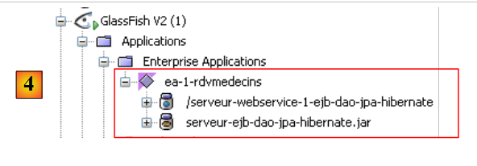 |
- في [4]، يتم نشره. يمكننا أن نرى أنه يحتوي على كلتا الوحدتين: Web و EJB.
4.10.2. مشروع NetBeans - الإصدار 2
سنوضح الآن كيفية نشر خدمة الويب عندما لا يكون لديك كود المصدر لوحدة EJB بل أرشيف .jar الخاص بها فقط.
سيكون مشروع NetBeans الجديد لخدمة الويب كما يلي:
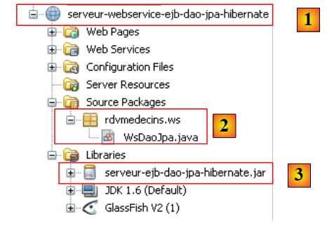 |
العناصر البارزة في المشروع هي كما يلي:
- [1]: يتم تنفيذ خدمة الويب بواسطة مشروع NetBeans من نوع [تطبيق ويب].
- [2]: يتم تنفيذ خدمة الويب بواسطة فئة [WsDaoJpa]، التي درسناها بالفعل
- [3]: أرشيف EJB لطبقة [DAO]، والذي يسمح لفئة [WsDaoJpa] بالوصول إلى تعريفات الفئات والواجهات والكيانات المختلفة في طبقتي [DAO] و[JPA].
ثم نقوم بإنشاء مشروع المؤسسة المطلوب لنشر خدمة الويب:
 |
- [1] نقوم بإنشاء تطبيق مؤسسي [ea-rdvmedecins]، بدون أي وحدات في البداية.
- في [2]، نضيف الوحدة النمطية السابقة للويب [webservice-ejb-dao-jpa-hibernate]
- في [3]، النتيجة.
في حالته الحالية، لا يمكن نشر تطبيق المؤسسة [ea-rdvmedecins] على خادم GlassFish من NetBeans. تحدث خطأ. لذلك يجب عليك نشر أرشيف EAR لتطبيق [ea-rdvmedecins] يدويًا:
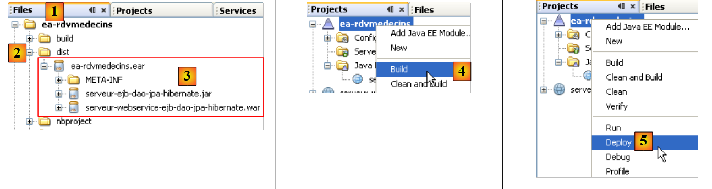 |
- يوجد أرشيف [ea-rdvmedecins.ear] في المجلد [dist] [2] في علامة التبويب [Files] في NetBeans.
- في هذا الأرشيف [3]، ستجد مكوني تطبيق المؤسسة:
- أرشيف EJB [ejb-server-dao-jpa-hibernate]. يوجد هذا الأرشيف لأنه كان جزءًا من المكتبات التي تشير إليها خدمة الويب.
- أرشيف خدمة الويب [webservice-server-ejb-dao-jpa-hibernate].
- يتم إنشاء الأرشيف [ea-rdvmedecins.ear] من خلال عملية إنشاء بسيطة [4] لتطبيق المؤسسة.
- في [5]، تفشل عملية النشر.
لنشر أرشيف تطبيق المؤسسة [ea-rdvmedecins.ear]، نتبع نفس الإجراءات التي اتبعناها عند نشر أرشيف EJB [ejb-server-dao-jpa-hibernate.jar] في القسم 4.2. وسنستخدم مرة أخرى عميل إدارة الويب الخاص بخادم GlassFish. ولن نكرر الخطوات التي سبق وصفها.
أولاً، سنبدأ بـ"إلغاء تحميل" التطبيق المؤسسي الذي تم نشره في القسم 4.10.1:
 |
- [1]: حدد فرع [تطبيقات المؤسسة] في خادم GlassFish
- في [2] حدد تطبيق المؤسسة المراد إلغاء تحميله، ثم في [3] قم بإلغاء تحميله
- في [4]، تم إلغاء تحميل تطبيق المؤسسة
 |
- في [1]، حدد فرع [تطبيقات المؤسسة] لخادم GlassFish
- في [2]، قم بنشر تطبيق مؤسسي جديد
- في [3]، حدد نوع [تطبيق المؤسسة]
- في [4]، حدد ملف .ear لمشروع NetBeans [ea-rdvmedecins]
- في [5]، قم بنشر هذا الأرشيف
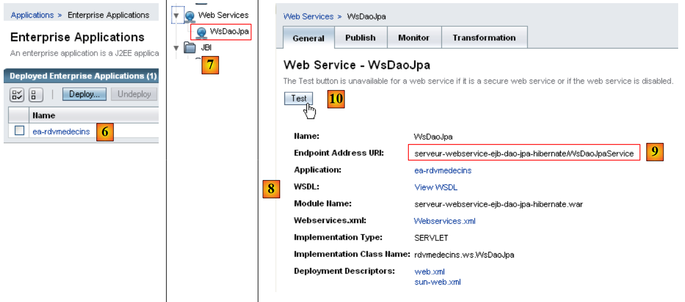 |
- في [6]، تم نشر التطبيق
- في [7]، تظهر خدمة الويب [WsDaoJpa] في فرع [Web Services] لخادم GlassFish. حددها.
- في [8]، تتوفر لديك تفاصيل متنوعة حول خدمة الويب. المعلومات الأكثر صلة بالعميل هي [9]: عنوان URI لخدمة الويب.
- في [10]، يمكنك اختبار خدمة الويب
 |
- في [11]، يظهر عنوان URI لخدمة الويب الذي تمت إضافة المعلمة ?test إليه. يعرض عنوان URI هذا صفحة اختبار. يتم عرض جميع الطرق (@WebMethod) التي تكشف عنها خدمة الويب ويمكن اختبارها. هنا، نختبر الطريقة [13]، التي تسترد قائمة العملاء.
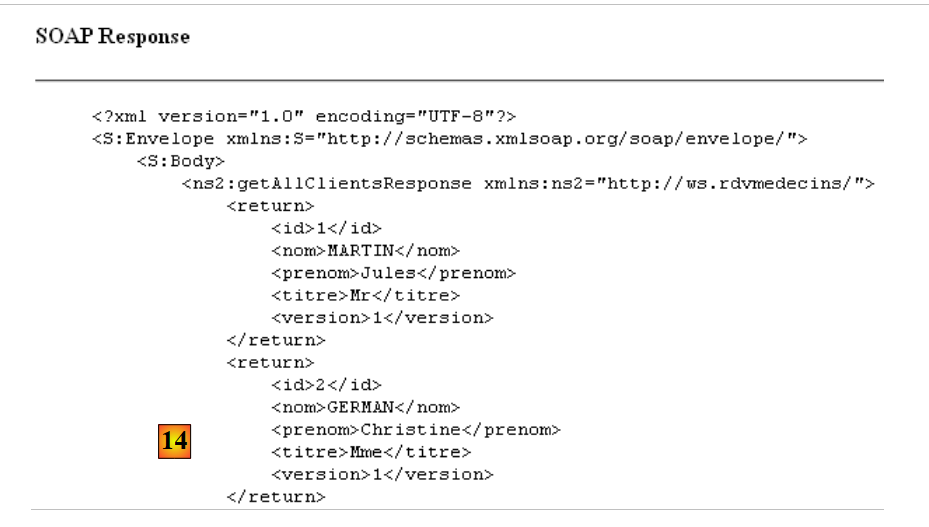 |
- في [14]، نعرض فقط جزءًا من صفحة الاستجابة. لكن يمكننا أن نرى أن الطريقة getAllClients قد أعادت بالفعل قائمة العملاء. تظهر لقطة الشاشة أنها ترسل استجابتها بتنسيق XML.
يتم وصف خدمة الويب بشكل كامل بواسطة ملف XML يُسمى ملف WSDL:
 |
- في [1] في أداة إدارة خادم GlassFish على الويب، حدد خدمة الويب [WsDaoJpa]
- في [2]، اتبع الرابط [View WSDL]
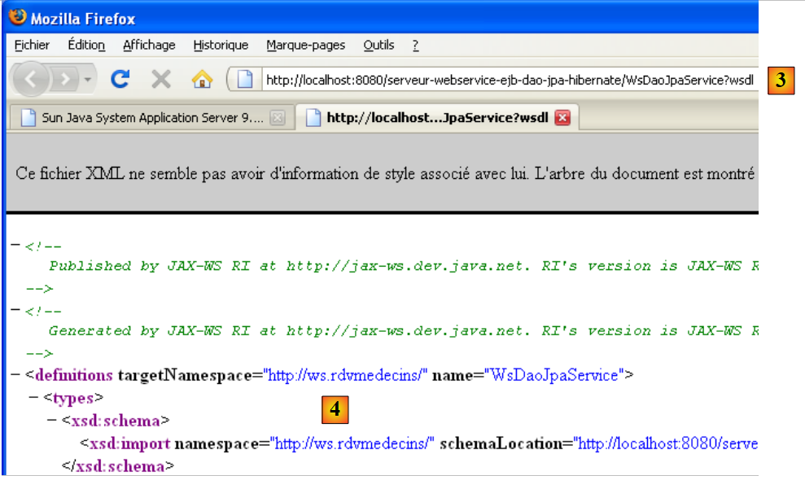 |
- في [3]: عنوان URI لملف WSDL. هذه معلومة مهمة يجب معرفتها. فهي مطلوبة لتكوين العملاء لهذه الخدمة الويب.
- في [4]، الوصف XML لخدمة الويب. لن نعلق على هذا المحتوى المعقد.
4.10.3. اختبارات JUnit لخدمة الويب
نقوم بإنشاء مشروع NetBeans لـ"تشغيل" الاختبارات التي تم إجراؤها سابقًا باستخدام عميل EJB، ولكن هذه المرة باستخدام عميل لخدمة الويب التي تم نشرها مؤخرًا. هنا، نتبع إجراءً مشابهًا للإجراء الموصوف في القسم 14.2.1، الصفحة 115 من [ref1].
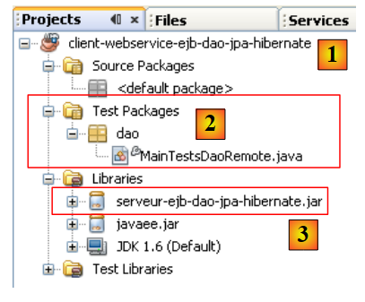 |
- في [1]، مشروع Java كلاسيكي
- في [2]، فئة الاختبار
- في [3]، يستخدم العميل أرشيف EJB للوصول إلى تعريفات واجهة طبقة [DAO] وكيانات JPA. لاحظ أن هذا الأرشيف موجود في المجلد الفرعي [dist] ضمن مجلد وحدة EJB.
للوصول إلى خدمة الويب البعيدة، يجب إنشاء فئات الوكيل:
 |
في الرسم البياني أعلاه، تتواصل الطبقة [2] [C=العميل] مع الطبقة [1] [S=الخادم]. للتفاعل مع الطبقة [S]، يجب على العميل [C] إنشاء اتصال شبكي مع الطبقة [S] والتواصل معها باستخدام بروتوكول محدد. اتصالات الشبكة هي اتصالات TCP، وبروتوكول النقل هو HTTP. يتم تنفيذ الطبقة [S]، التي تمثل خدمة الويب، بواسطة برنامج Java servlet يعمل على خادم GlassFish. لم نقم بكتابة هذا البرنامج. يتم إنشاؤه تلقائيًا بواسطة GlassFish استنادًا إلى التعليقات التوضيحية @WebService و@WebMethod في فئة [WsDaoJpa] التي قمنا بكتابتها. وبالمثل، سنقوم بأتمتة إنشاء طبقة العميل [C]. تُسمى طبقة [C] أحيانًا طبقة الوكيل لخدمة الويب البعيدة، حيث يشير مصطلح "الوكيل" إلى عنصر وسيط في سلسلة البرامج. هنا، يعمل وكيل C كوسيط بين العميل الذي نحن على وشك كتابته وخدمة الويب التي قمنا بنشرها.
باستخدام NetBeans 6.5، يمكن إنشاء الوكيل C على النحو التالي (بالنسبة لبقية العملية، يجب أن تكون خدمة الويب قيد التشغيل على خادم GlassFish):
 |
- في [1]، أضف عنصرًا جديدًا إلى مشروع Java
- في [2]، حدد فرع [Web Services]
- في [3]، حدد [Web Service Client]
 |
- في [4]، أدخل عنوان URI لملف WSDL الخاص بخدمة الويب. تم عرض عنوان URI هذا في القسم 4.10.2.
- في [5]، اترك القيمة الافتراضية [JAX-WS]. القيمة الأخرى الممكنة هي [JAX-RPC]
- بعد تأكيد معالج إنشاء وكيل خدمة الويب، تم توسيع مشروع NetBeans ليشمل فرع [Web Service References] [6]. يعرض هذا الفرع الطرق التي تكشف عنها خدمة الويب البعيدة.
 |
- في علامة التبويب [Files] [7]، تمت إضافة كود مصدر Java [8]. وهو يتوافق مع الوكيل C الذي تم إنشاؤه.
- في [9] يوجد كود إحدى الفئات. يمكننا أن نرى [10] أنها قد وُضعت في حزمة [rdvmedecins.ws]. لن نعلق على كود هذه الفئات، الذي هو مرة أخرى معقد للغاية.
بالنسبة لعميل Java الذي نقوم ببنائه، يعمل الوكيل C الذي تم إنشاؤه كوسيط. للوصول إلى الطريقة M لخدمة الويب البعيدة، يستدعي عميل Java الطريقة M للوكيل C. وبالتالي، يستدعي عميل Java الطرق المحلية (التي يتم تنفيذها في نفس JVM)، وبشكل شفاف بالنسبة له، يتم ترجمة هذه الاستدعاءات المحلية إلى استدعاءات بعيدة.
ما زلنا بحاجة إلى معرفة كيفية استدعاء طرق M للوكيل C. لنعد إلى فئة اختبار JUnit الخاصة بنا:
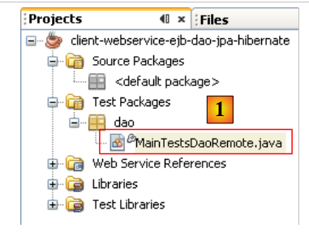 |
في [1]، فئة الاختبار [MainTestsDaoRemote] هي الفئة المستخدمة بالفعل عند اختبار EJB لطبقة [dao]:
- السطر [13]، يبقى اختبار test1 دون تغيير.
- السطر [9]، تم حذف محتويات طريقة [init].
في هذه المرحلة، يحتوي المشروع على أخطاء لأن طريقة الاختبار [test1] تستخدم كيانات [Client] و[Medecin] و[Creneau] و[Rv]، التي لم تعد موجودة في نفس الحزم كما كان الحال من قبل. فهي موجودة الآن في حزمة الوكيل C التي تم إنشاؤها. نقوم بإزالة عبارات الاستيراد ذات الصلة وإعادة إنشائها باستخدام عملية Fix Imports.
 |
لنعد إلى كود فئة الاختبار [MainTestsDaoRemote]:
يجب أن تقوم الطريقة [init] في السطر 10 بتهيئة المرجع إلى طبقة [dao] في السطر 7. نحتاج إلى معرفة كيفية استخدام الوكيل C الذي تم إنشاؤه في كودنا. يساعدنا NetBeans في هذه العملية.
 |
- حدد طريقة [getAllClients] لخدمة الويب في [1] بالماوس، ثم اسحب هذه الطريقة وأسقطها في طريقة [init] لفئة الاختبار.
نحصل على النتيجة [2]. يوضح لنا هيكل الكود هذا كيفية استخدام الوكيل C الذي تم إنشاؤه:
- يُظهر السطر [5] أن الطريقة [getAllClients] هي طريقة للكائن [WsDaoJpa] المُعرَّف في السطر 3. النوع [WsDaoJpa] هو واجهة تُظهر نفس الطرق التي تُظهرها خدمة الويب البعيدة.
- في السطر [3]، يتم الحصول على كائن [WsDaoJpaPort] من كائن آخر من النوع [WsDaoJpaService] المحدد في السطر 2. يمثل النوع [WsDaoJpaService] الوكيل C الذي تم إنشاؤه محليًا.
- قد يفشل الوصول إلى خدمة الويب البعيدة، لذا يتم تضمين كتلة الكود بأكملها في كتلة try/catch.
- توجد كائنات الوكيل C في الحزمة [rdvmedecins.ws]
بمجرد فهم هذا الكود، نرى أنه يمكن الحصول على المرجع المحلي لخدمة الويب البعيدة باستخدام الكود التالي:
يصبح كود فئة اختبار JUnit كما يلي:
نحن الآن جاهزون للاختبار:
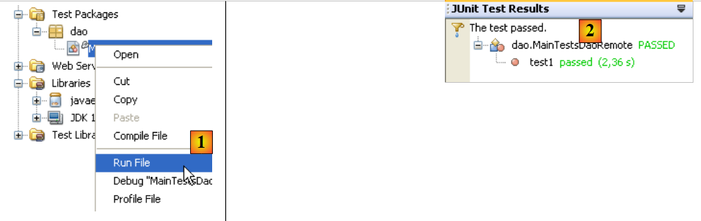 |
في [1]، يتم تنفيذ اختبار JUnit. في [2]، ينجح الاختبار. إذا نظرنا إلى المخرجات على وحدة التحكم في NetBeans، نرى أسطرًا مثل التالية:
Liste des clients :
rdvmedecins.ws.Client@1982fc1
rdvmedecins.ws.Client@676437
rdvmedecins.ws.Client@1e4853f
rdvmedecins.ws.Client@1e808ca
على جانب الخادم، تحتوي كيان [Client] على طريقة toString تعرض الحقول المختلفة لكائن [Client]. أثناء الإنشاء التلقائي للوكيل C، يتم إنشاء الكيانات في الوكيل C ولكن مع الحقول الخاصة فقط مصحوبة بأساليب get/set الخاصة بها. وبالتالي، لم يتم إنشاء أسلوب toString في كيان [Client] للوكيل C. وهذا يفسر العرض السابق. ولا ينتقص هذا من اختبار JUnit: فقد نجح الاختبار. سنعتبر الآن أن لدينا خدمة ويب عاملة.